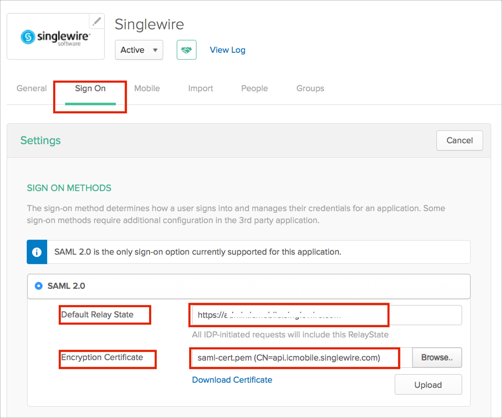
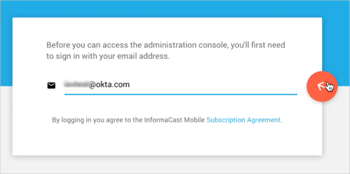

Contact the SingleWire Support team and request that they enable SAML 2.0 for your account.
Include the following IDP Metadata URL:
Sign into the Okta Admin dashboard to generate this value.
Save the following certificate as saml-cert.pem:
-----BEGIN CERTIFICATE----- MIIDtzCCAp+gAwIBAgIJAL29op+NUgfkMA0GCSqGSIb3DQEBBQUAMHIxCzAJBgNV BAYTAlVTMRIwEAYDVQQIDAlXaXNjb25zaW4xEDAOBgNVBAcMB01hZGlzb24xFzAV BgNVBAoMDlNpbmdsZXdpcmUgTExDMSQwIgYDVQQDDBthcGkuaWNtb2JpbGUuc2lu Z2xld2lyZS5jb20wHhcNMTMxMjExMTU0NTI1WhcNNDEwNDI3MTU0NTI1WjByMQsw CQYDVQQGEwJVUzESMBAGA1UECAwJV2lzY29uc2luMRAwDgYDVQQHDAdNYWRpc29u MRcwFQYDVQQKDA5TaW5nbGV3aXJlIExMQzEkMCIGA1UEAwwbYXBpLmljbW9iaWxl LnNpbmdsZXdpcmUuY29tMIIBIjANBgkqhkiG9w0BAQEFAAOCAQ8AMIIBCgKCAQEA soOvikCV/aBp/6YYYrTZGgJp0abOWiqE4ig7BJgM4GySbjoqMFUiH9mlzS3zLj9X irsnndFwG1SiDHpVHKHKnEPD0UE5kIhP4jDtBED3SZvO7+5ui3V63MNcmwFxt5Go yx9kMObbycC/JOVXi/sbTP4+UxUuUpfYwab/dW7avqqQa0H8Jchfwk23FNzXox/v LXDwDLBMWCpeCCZH+fddacvS/T6A8uCiSgxYOOCx6JSb7TbF2e3Oh5xJeeXCeEuM qdogjG1oTTI4GihX1DKLSwndXgYFWjpaR1FpVrNL2hn0X4HdO+NcLj0udyUNAedM G+t8GGfdpeWLLBsgquR+JwIDAQABo1AwTjAdBgNVHQ4EFgQUdIMhqidl4CRn1ot/ FQMU6zxfaaIwHwYDVR0jBBgwFoAUdIMhqidl4CRn1ot/FQMU6zxfaaIwDAYDVR0T BAUwAwEB/zANBgkqhkiG9w0BAQUFAAOCAQEAi7FdX9uMdFDTE2nsgOSRx6jp8qrB gTyvuwy3wx8qOFLfX936/t2nNVCc4rr6EZoGC3uskB5m4PzjXsrYjE4p8ekbHiPG 5fsWXaKAfvpqKfa/RUwy2e9WW3QjdvOZB/R0jKaaGBQued2RSlu1qX6F5ppJ14sV ICKvkRiEpIGPs7u83D51LGjIBK/uy4GSOCKKh/ZFEZfF8vHgkhCeGgzQF7aUKNbG VerAKspwi8bFU7mKwDPlnqhwLH1qj2phQi0jWhoFJnZqeMomwBUsH+yISMVSCY9W 3lLGrusKrChu/0ndpPU+Br4r3L4bTqTNT/rHZ1pzMQ0+GnnO2izjn19sfA== -----END CERTIFICATE——
In Okta, select the Sign On tab for the SingleWire app, then click Edit:
Enter the Default Relay State provided by SingleWire, as shown below.
For Encryption Certificate, click Browse to locate the same-cert.pem certificate you saved earlier, then click Upload as shown below.
Click Save.

The SingleWire Support team will process your request. After receiving a confirmation email, you can start assigning people to the application.
Done!
Notes:
SP-initiated flows are supported.
IDP-initiated flows and Just In Time (JIT) provisioning are not supported.
Enter your email address.
Click the arrow icon.
